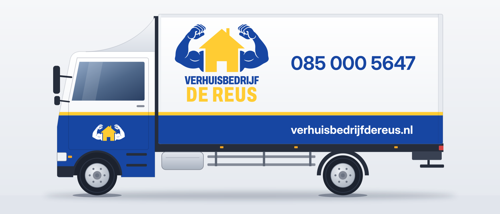
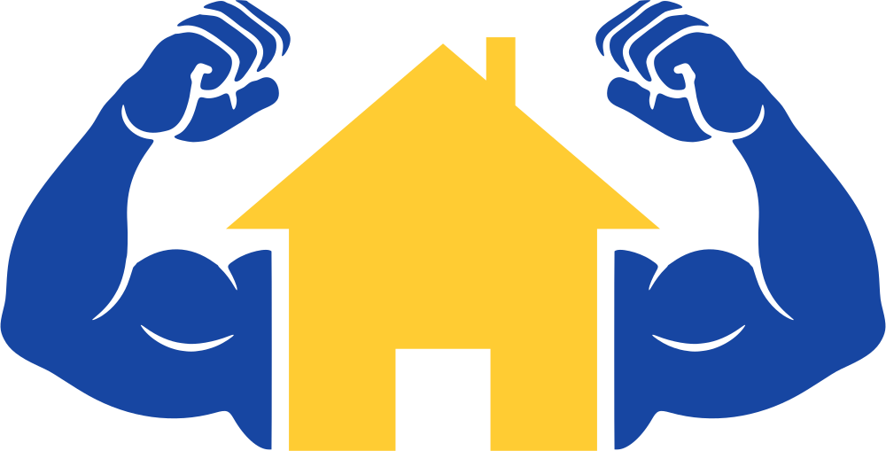
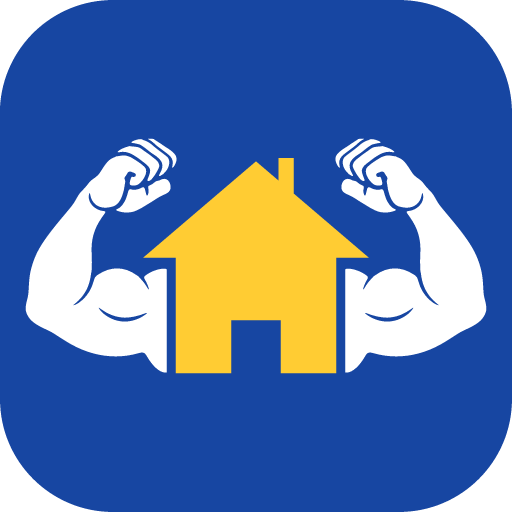
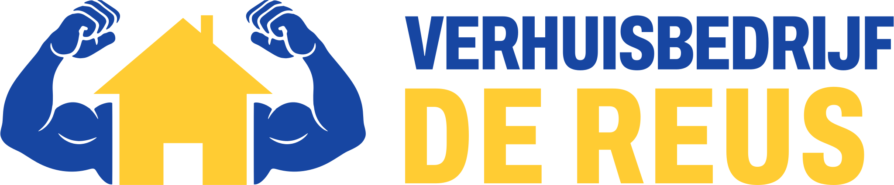
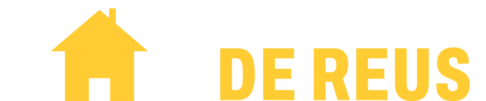
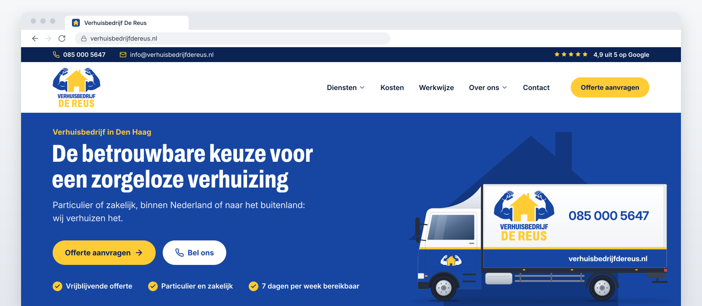

Merkboek
Compacte webeditie, voor iedereen die de website van De Reus bouwt of er teksten voor schrijft.

Merk in het kort
De Reus doet het zware werk van een verhuizing, zodat u dat niet hoeft te doen. Sterk waar het zwaar is, zorgvuldig met alles wat we optillen.
Kernwaarden
- SterkTillen en sjouwen laat u aan ons over.
- ZorgvuldigWat we optillen, zetten we heel en netjes weer neer.
- BetrouwbaarWat we afspreken, doen we op het afgesproken tijdstip.
- EerlijkEen heldere offerte vooraf en een eerlijk verhaal over de prijs.
- BetrokkenWe denken met u mee, ook als het zwaar wordt.
Voor wie: particulieren en kleine bedrijven, binnen Nederland en van en naar het buitenland, en wie een woning leeg moet opleveren.
Feiten die we noemen
- 4,9 uit 5 op Google
- 7 dagen per week beschikbaar
- Geen voorrijkosten
- Inboedel standaard verzekerd
- Eén vaste verhuisadviseur, van begin tot eind
- Reactie binnen 24 uur na een aanvraag
Andere feiten noemen we pas als De Reus ze heeft bevestigd.
Korte bedrijfsomschrijving
Logo
Gebruik altijd een logobestand en bouw het logo nooit na.
Opbouw
- De armen. Koningsblauw, vuisten omhoog: wij doen het zware werk.
- Het huis. Goudgeel: uw thuis en alles wat daarin zit.
- Het woordmerk. VERHUISBEDRIJF in koningsblauw, DE REUS in goudgeel. Een tekening: nooit natypen.
Het logo heeft geen tagline; de slogan staat los (hoofdstuk 06).
Varianten






Vrije ruimte en minimale grootte
Houd rondom minimaal 1x vrij: de breedte van de deur, 10,7% van de logobreedte (bij 200 px ongeveer 21 px). Horizontaal: 21,1% van de hoogte.
| Variant | Minimaal op scherm |
|---|---|
| Logo | 100 px breed |
| Horizontaal logo | 28 px hoog |
| Beeldmerk | 32 px breed |
| Favicon (huis) | 16 px |
Kleiner dan 100 px: het beeldmerk. Onder 48 px liever de favicon.
Achtergronden
Licht: het primaire logo.
Blauw: het negatieve logo.
Foto: op een wit vlak.
Primair op blauw: de armen vallen weg.
Goudgeel: huis en naam vallen weg.

Drukke foto zonder vlak.
Wat niet mag
Uitrekken. Altijd in verhouding schalen.
Andere kleuren of effecten. Geen schaduw, gloed of verloop.
Onderdelen verplaatsen. Voor een brede plek is er het horizontale logo.
De Reus
Naam opnieuw zetten. Gebruik altijd het logobestand.
Bestanden
In assets/logo/: SVG voor de website, PNG (2048 px, transparant) voor mail en Office.
| Bestand | Gebruik |
|---|---|
dereus-logo | Primair, op licht |
dereus-logo-negatief | Op blauw, zoals de footer |
dereus-logo-horizontaal · -negatief | Smalle plekken, vanaf 28 px hoog (ter goedkeuring) |
dereus-beeldmerk · -negatief | Avatar en kleine plekken, vanaf 32 px |
dereus-favicon | .ico (16, 32, 48 px), 180 px voor apple-touch-icon, 512 px voor het manifest |
dereus-favicon-armen | App-iconen, 180 en 512 px |
Kleur en letters
Blauw draagt, geel valt op. Alle waarden staan in tokens.css.
Merkkleuren
Neutrale en functionele kleuren
| Kleur | HEX | Gebruik | Token |
|---|---|---|---|
| Inkt | #0E1A33 | Lopende tekst | --ink |
| Grafiet | #2E3647 | Titels in kaarten | --graphite |
| Leisteen | #5E6675 | Gedempte tekst, bijschriften | --grey-600 |
| Staalgrijs | #838996 | Randen van invoervelden | --grey-400 |
| Zilvergrijs | #D3D7DE | Rand van kaarten, lijnen | --grey-300 |
| Mist | #F6F7F9 | Panelen en afwisselende secties | --off-white |
| Wit | #FFFFFF | Achtergrond | --white |
| Fout | #B42318 | Foutmeldingen, met icoon en tekst | --error |
| Succes | #1E7A3C | Bevestigingen, nooit als knop | --success |
Verhouding
60 licht, 30 blauw, 10 geel. Voelt een pagina geel aan, dan is het te veel.
Regels en contrast
- Geel nooit als tekst op wit.Ook geen witte tekst op geel. Een geel accent in een blauw icoon mag.
- Op geel staat diepblauw of inkt.
- Een gele knop alleen voor “Offerte aanvragen”.Hooguit één per blok; bij hover iets donkerder.
- Lopende tekst in inkt.Blauw is voor koppen, links, iconen en vlakken.
WCAG 2.2 AA: tekst minimaal 4,5 : 1, grote tekst en iconen 3 : 1.
| Combinatie | Voorbeeld | Verhouding | Tekst 4,5 | Groot, UI 3,0 | Gebruik |
|---|---|---|---|---|---|
| Inkt op wit | Lopende tekst | ||||
| Koningsblauw op wit | Koppen, links | ||||
| Wit op koningsblauw | Blauwe banden, tweede knop | ||||
| Diepblauw op goudgeel | Offerteknop | ||||
| Goudgeel op wit | Nooit voor tekst of losse iconen |
Lettertypes
800 voor display, H1 en H2, 700 voor H3. Familie van het woordmerk.
400 voor tekst, 600 voor nadruk en prijzen, 700 voor H4 tot H6 en knoppen.
Gratis (SIL Open Font License); de webbestanden staan in assets/fonts/.
Typeschaal
Root 16 px. Maten met “tot” groeien mee van 375 tot 1280 px schermbreedte.
| Rol | Token | px | rem | Letter |
|---|---|---|---|---|
| Display | --text-display | 44 tot 72 | 2,75 tot 4,5 | Archivo 800 |
| H1 | --text-h1 | 40 tot 56 | 2,5 tot 3,5 | Archivo 800 |
| H2 | --text-h2 | 32 tot 40 | 2 tot 2,5 | Archivo 800 |
| H3 | --text-h3 | 24 tot 28 | 1,5 tot 1,75 | Archivo 700 |
| H4 | --text-h4 | 20 tot 22 | 1,25 tot 1,375 | Inter 700 |
| H5 | --text-h5 | 18 | 1,125 | Inter 700 |
| Label (H6) | --text-h6 | 14 | 0,875 | Inter 700, kapitalen |
| Intro | --text-lead | 20 | 1,25 | Inter 400 |
| Tekst | --text-body | 18 | 1,125 | Inter 400 |
| Klein | --text-small | 16 | 1 | Inter 400 |
| Extra klein | --text-xs | 14 | 0,875 | Inter 400, alleen juridisch |
| Knop | --text-button | 17 | 1,0625 | Inter 700 |
- Koppen als een gewone zin.Kapitalen alleen in korte displayregels en labels.
- Archivo voor koppen, Inter voor de rest.Geen derde lettertype.
- Groot genoeg.Tekst 18 px, hoogstens 68 tekens per regel, nooit onder 16 px. Nadruk met SemiBold, geen cursief.
Webcomponenten
Alles gemaakt uit tokens.css: neem de variabelen over, niet de waarden.
Knoppen
- Primair: goudgeel, diepblauwe tekst, pilvorm (
--radius-button), minimaal 48 px hoog. Alleen voor “Offerte aanvragen”. - Secundair: koningsblauw met witte tekst, voor bellen en tweede acties; op blauw wit met blauwe tekst.
- Focus: ring van 3 px op 2 px afstand, koningsblauw op licht, wit op blauw.
Kaarten en vlakken
Particuliere verhuizingen
Van inpakken tot uitpakken, met één vaste verhuisadviseur.
Meer informatieGeen voorrijkosten
Een vlak in mist, voor een korte uitleg of belofte.
- Kaart: wit, rand zilvergrijs, hoeken 14 px (
--radius-card). Vlak: mist, zonder rand. - Foto's: hoeken 20 px (
--radius-media). Schaduw alleen voor menu's en een vaste header.
Formuliervelden
- Het label staat altijd boven het veld, nooit alleen een voorbeeldtekst.
- Minimaal 48 px hoog, rand staalgrijs, hoeken 8 px (
--radius-control). - Fout: rode rand en een melding eronder, met icoon en tekst.
Iconen
Gevuld, koningsblauw met één goudgeel onderdeel; op blauw wit met goudgeel. 48 px in kaarten, minimaal 24 px, altijd met een label. De SVG's staan in assets/imagery/.


Vinkje
24 px in lijsten, 32 px bij beloftes. Lijniconen (pijl, telefoon, menu) nooit in één rij met gevulde iconen.
Websiteheader

Beeld
Echt, licht en zorgvuldig. Liever geen foto dan een stockfoto.
Principes
- EchtOnze eigen verhuizers aan het werk, bij echte klanten. Geen modellen.
- Kracht met zorgTillen en sjouwen, en handen die inpakken of een deken om de kast leggen.
- Licht en helderDaglicht en rust. Blauw en geel alleen via wat echt in huisstijl is.
Wel en niet
| Wel | Niet |
|---|---|
| Echte verhuizers van De Reus, in daglicht | Stockfoto's met onbekende verhuizers of een bus zonder logo |
| Handen die zorgvuldig inpakken, van dichtbij | Een duim omhoog en lege dozen |
| Veilig tillen, huisnummers onherkenbaar | Onveilig tillen, rommel of schade in beeld |
| Rustige beelden met ruimte voor tekst | Donkere, zwaar gefilterde of zwart-witte foto's |
Fotografie en mascotte
Nog geen eigen foto's: tot de fotoshoot gebruikt de website iconen of het beeldmerk. Foto's 16 : 9 bovenaan, 4 : 3 in de tekst, minimaal 1600 px breed, met een Nederlandse alt-tekst.
De mascotte is een keuze van de eigenaar en staat los van dit merkboek. Op de nieuwe website staat voorlopig een blauwe versie in de hero, die met één instelling aan of uit gaat.
Toon en schrijfstijl
Vriendelijk, rustig en duidelijk, zoals onze verhuizers aan de deur. We maken ons sterk met feiten, niet met grote woorden.
Wij zeggen u
Altijd u en uw, nooit je, jij of jouw. Over onszelf zeggen we wij of we. Reviews nemen we letterlijk over.
Schrijfregels
- Begin bij de klant.Eerst de zorg, dan wat wij doen.“Ziet u op tegen het sjouwen? Dat doen wij.”
- Wees concreet.Feiten in plaats van mooie woorden: binnen 24 uur, geen voorrijkosten.
- Houd het kort.Zinnen liefst onder de 20 woorden.
- Schrijf actief.Zeg wie wat doet: “Wij bellen u binnen 24 uur”.
- Eén volgende stap.Elk blok eindigt met één actie: Offerte aanvragen of Bel 085 000 5647.
Zo schrijven we, zo niet
| Zo schrijven we | Zo niet |
|---|---|
| “Laat uw gegevens achter. Wij bellen u binnen 24 uur.” | “Laat uw gegevens achter en word binnen 24 uur gebeld door een van onze verhuisexperts.” |
| “Een spoedklus, of wilt u meteen iemand spreken? Bel 085 000 5647.” | “Wilt u direct contact? Bel ons dan op!” |
| “Particulier of zakelijk, binnen Nederland of naar het buitenland: wij verhuizen het.” | “Wij bieden een breed scala aan verhuisdiensten.” |
| “Klanten geven ons op Google een 4,9 uit 5.” | “De beste verhuizer van Den Haag!” |
| “Klaar om uw verhuizing te regelen? Vraag vrijblijvend een offerte aan.” | “Vraag nu snel je gratis offerte aan!” |
Woorden die we niet gebruiken
| Niet | Waarom, of wat dan wel |
|---|---|
| zonder verrassingen · garantie · alles is mogelijk | Niet waar te maken. Wel: “een heldere offerte vooraf”. |
| volledig verzekerd | Wel: “standaard verzekerd”. |
| erkend · gecertificeerd · sinds (jaartal) · KvK-nummer · verhuislift huren | Niet bevestigd. Alleen feiten uit hoofdstuk 01. |
| bieden · daarnaast · bovendien · cruciaal · breed scala · naadloos · optimaal · de beste · nummer 1 | Holle woorden. Schrijf wat we doen. |
| je · jij · jouw | We zeggen u en uw. |
| 4,9/5 · 4.9 · gedachtestreepjes | Wel: “4,9 uit 5”; een komma, punt of dubbele punt. |
Vaste teksten
| Waar | Tekst |
|---|---|
| Hoofdknop en offerteformulier | Offerte aanvragen |
| Contactformulier | Bericht versturen |
| Telefoon | Bel 085 000 5647 |
| Mail ons | |
| Beoordeling | 4,9 uit 5 op Google |
| Openingstijden | Maandag tot en met zaterdag 08.00 tot 20.00 uur, zondag 09.00 tot 17.00 uur. Kort: ma t/m za 08.00 tot 20.00 uur. |
“Gratis en vrijblijvend” staat in de zin boven de knop, niet op de knop.
Slogan en afsluiter
- “Geen verhuizing te groot!” is onze slogan. Hij staat los van het logo, ernaast of eronder waar ruimte is, altijd met uitroepteken.
- “Sterk in verhuizen. Zorgeloos geregeld.” is de afsluiter, voor de footer en slotregels.
- Eén slogan per blok: nooit de slogan en de afsluiter samen.
Contact en versie
Twijfelt u of iets mag? Vraag het eerst aan De Reus, dan denken we graag mee.
| Handelsnaam | Verhuisbedrijf De Reus |
|---|---|
| Adres | Lau Mazirellaan 336, 2525 ZJ Den Haag (hoofdkantoor) |
| Telefoon | 085 000 5647 |
| info@verhuisbedrijfdereus.nl | |
| Website | www.verhuisbedrijfdereus.nl |
| Bereikbaar | Maandag tot en met zaterdag 08.00 tot 20.00 uur Zondag 09.00 tot 17.00 uur |
Versies
| Versie | Datum | Wijziging |
|---|---|---|
| 1.1 | september 2026 | Compacte webeditie: alleen wat de website nodig heeft. |
| 1.0 | september 2026 | Eerste versie, met drukwerk en toepassingen. |